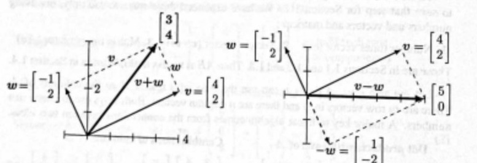

Combining addition with scalar multiplication produces a "linear combination" of v and w. Multiply v by c and multiply w by d. Then add cv + dw.
The sum of cv and dw is a linear combination cv + dw.
Four special linear combinations are: sum, difference, zero, and a scalar multiple cv :
The zero vector is always a possible combination from c = d = 0. Every time we see a "space" of vectors, that zero vector will be included. This big view, taking all the combinations of v and w, is linear algebra at work.
The figures show how you can visualize vectors. For algebra, we just need the components (like 4 and 2). That vector v is represented by an arrow. The arrow goes v1 = 4 units to the right and v2 = 2 units up. It ends at the point whose x, y coordinates are 4, 2. This point is another representation of the vector—so we have three ways to describe v :
Represent vector v Two numbers Arrow from (0, 0) Point in the plane
We add using the numbers. We visualize v + w using arrows for v and w and v + w.
Vector addition (head to tail) At the end of v, place the start of w.

Figure 1.1: Vector addition v + w = (3, 4) produces the diagonal of a parallelogram. On the right : The reverse of w is −w. The linear combination is v − w = (5, 0).
We travel along v and then along w. Or we take the diagonal shortcut along v + w. We could also go along w and then v. In other words, w + v gives the same answer as v + w. These are different ways along the parallelogram (in this example it is a rectangle).